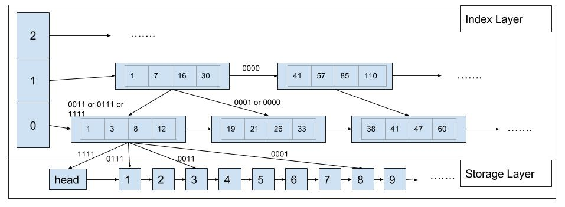
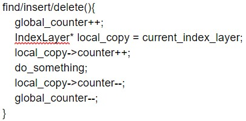
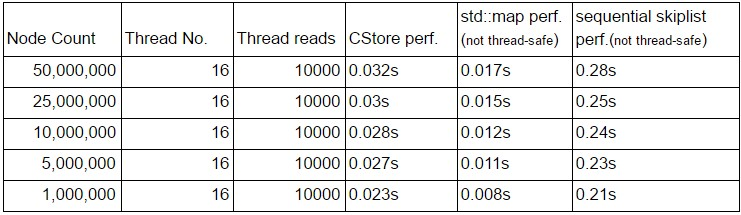

In this project we implemented a lock-free skiplist which supports insert, delete and find. It is different from traditional lock-free skiplist in a way that we divide the skiplist into the index layer and storage layer, and apply SIMD to speed up the lookup process.
Above is a representation of the architecture of our skiplist. In the index layer, we group multiple indexes of a node together in one index node, so we can make use of cache locality and use SIMD comparison to get the routing decision in one run. The index layer will not change until some upper limit of the number of inserts and deletes are triggered, in which case we will build a new index layer to replace the old one. In the storage layer, we only have an ordered lock-free singly-linked list.
1. In order to hava a good perfermance, we need to build a lockfree sorted linkedlist act as the storage layer. We referred to Harris’s solution[1] of a lockfree sorted linkedlist: utilize CAS and a special mark on node’s next address to implement the lockfree insert and lockfree deletion. The last digit of the next pointer is used to mark the node is logical deleted. However, this is not enough in our case. Beside the storage layer, we still have index layer which holds the pointers to the nodes in storage layer. If we physically delete the node after a node is marked logical deleted as described in the paper[1], this will cause unsafe operations. To address this, we introduced another flag which we called it confirm_delete flag. This flag placed on the second last digit of a node’s next pointer. The confirm_delete flag will only be set while rebuilding the new index layer. And after a node is marked as confirm_delete, it will be physically deleted in later operations.
2. For the index layer, because we are grouping multiple indexes on the same level to one single index node, this makes modifying it without using locks to be very hard. This leads us to believe it is better to only build a new index layer and replace the old one at some interval. Although it may hurts the performance a little bit when inserts and deletes are a majority, it saves us the difficulty to build a lock-free index layer (because simply adding a lock or moving data in memory may hurt the performance even further).
3. The index layer rebuilding mechanism introduces a new problem: when shall we delete the old index layer? Because we do not have a way to confirm whether any ongoing query is searching through the index layer. If we are not careful, these queries will throw segmentation faults. To handle this problem, we added a global atomic counter and a per-index-layer atomic counter. As soon as any of the find(), insert() or delete() is entered/leaved, global counter will self-increment/decrement. After the global counter increment, we will save a copy of the pointer to the current index layer and increment that index layer’s counter, and after we are done we decrement it. The pseudo code looks like this:
Then in a backend process, we detect if global_counter is equal to the sum of the counter in both the old and new index layers. If it is, then this means no ongoing query is stuck between getting a local copy of the index layer and do something from the index layer, we only need to wait until old index layer’s counter is equal to 0. Then we can safely delete the old index layer. In our testing, atomic integers are very efficient if not highly contended, so it should not hurt the performance much.
Until now we still have minor bugs in our deletion part, but we are confident to fix them and begin profiling tonight. For read-only scenario, we have the following result compared to std::map (red-black tree, not thread-safe) and normal skiplist (not thread-safe):
We can see from the benchmark that if not adding lock to the std::map(), it generally is 2~3 times faster than our implementation. Because we are making use of data locality and SIMD comparison, we are far faster than sequential skiplist even the latter is not using a lock. We expect our solution to be faster than std::map with a lock.
We hope to benchmark the performance under different workload (mix of insert, delete and find) and see a good speedup from std::map with a lock under read-heavy scenario.